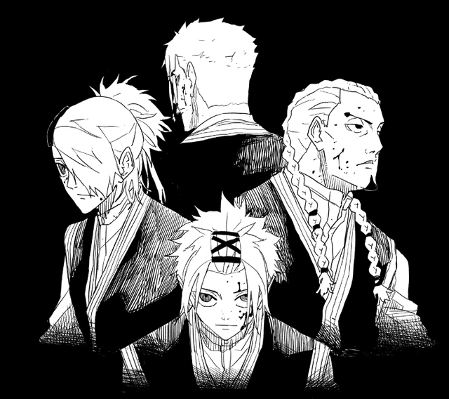

Archive / Factions
Organizations
Factions勢力
Who holds the blades, who sells them, who leaked the address.



Kamunabi 神奈備
State sorcerers, rebuilt from the Counter-Sorcery Army / Sorcery Bureau during the war. They guard remaining bearers in Sanso fortresses and want the Enchanted Blades under seal. Civilian sorcerers handle small jobs. The Kamunabi exist because some jobs are national, and because the Seitei War left them holding a myth instead of a trial.
Leaders include Kasen (director; later revealed as the leak), Ichiki, Yatsuru, Azami, Izaru, Kudo. Kasen still thinks the blades are a path to order, which is how you get a director leaking a smith’s address to the Hishaku. Ichiki trained Shiba and Azami. Azami helps hide Kunishige after the Malediction, then wants Chihiro away from Sojo. Kudo dies for Hakuri during the HQ infiltration. Izaru and Yatsuru sit on the same leadership table; the pages name them as the room, not as a moveset.
Hiyuki Kagari is the pointed end, Flame Bone of the Starving, assigned to problems the organization cannot file. Tafuku’s duel domain is the other half of that act. Natsuki (Lightning Menace) is the swordsman on the Volume 10 jacket. The Anti-Cloud Gouger Special Forces, six people built to solve one sword, are the state’s best offer in the first arc. Four die. That is the cavalry.
The Masumi ninja clan (Ro, Moku, Sumi) serve Samura until he frees them. They erase him from Iori, take her to the Kyoto Bloodshed Hotel, and Ro recovers Kumeyuri after Samura takes it off Hiruhiko. Chihiro later works inside the system: Magatsumi to the Kamunabi, Enten still in his hand. Leadership files: Ichiki, Yatsuru, Izaru.
Full org chart, Sanso list, Anti-Cloud Gouger roster, and the leak as policy: the Kamunabi page. Full ten, method, and the eight printed names: the Hishaku page. Full household, Tou, and the 208th: the Sazanami page. Masumi trio: Ro, Moku, Sumi. Soga and Mikaboshi: the clan page. Name register: every sourced name through 129.
Hishaku 毘灼
Ten criminal sorcerers, flame tattoos, shared fire-gate. They formed about four years before the main story with one plan for Shinuchi. They killed Kunishige, stole six blades, and spent three years trying to open the Lifelong Contracts by killing bearers. Allied with Korogumi yakuza and at least one Kamunabi head.
Eight are named on this site. Yura is the leader: calm enough to bet his life on a coin, the mind who raided the Rokuhira house, sold Cloud Gouger to Sojo, put Magatsumi on the Rakuzaichi block after cracking its seal, and signed a private contract with Samura. He wanted the Sword Master dead so the knot would open. Then he spoke to Akemura and changed the math.
Hokuto killed Ibuki Misaka so Cloud Gouger’s contract opened; he shares the Volume 10 jacket with Natsuki, Uruha, and Yura. Hiruhiko is the loudest younger blade, Blood Crane on the train, Play at the hotel. Kuguri (Twilight Wave) is who Chihiro copies Iai from. Toto tracks by blood and holds the fire-gate. Yukisada sits in the barrier when Yura spends Magatsumi without drawing it. Uran is ice on the raid. Bingo is lion-dancer muscle in headquarters. Two still unnamed.
They are not Sojo. Sojo is a customer. The Hishaku are the men who sold him a sword. Recaps that blur this cannot explain Yura.
Sazanami 漣
Two centuries of Rakuzaichi. The clan is an auction house that treats children as stock and calls that civilization. Kyora is the eleventh head: polite, absolute, Storehouse as environmental control inside the Kura. Hakuri is a failed product until the boy becomes a rival Storehouse. When Chihiro corners him, Kyora unsheathes Magatsumi and almost becomes someone else. He dies as himself, and uses it to admit, too late, what he did to Hakuri.
The Tou are the household military: Soya, Tamaki, Enji, Tenri. They defend the 208th auction. Tenri dies on a half-stable Datenseki stone trying to impress Kyora. Soya is the older brother who treated Hakuri as defective; a volume extra gives him a gag about memories he would like to misplace. It is not a redemption. Tamaki and Enji complete the four. Hakuri is the error that ends the firm, disowned, then the only living Sazanami to hold both Isou and the Storehouse.
The auction was a building. Hakuri is the building that walks. That single trick is why the Kamunabi bother to keep Chihiro: bearers can be un-armed and re-armed without a siege. It is also why the Hishaku hunt Hakuri after the building falls. Full movement: Rakuzaichi.
Soga and Mikaboshi
The Soga were mainland prophecy aristocracy. Chiaki’s foresight is the clan’s warrant, inherited proof of Izanami, Princess Soga, Chihiro’s mother. Akemura is her younger brother: Kunishige’s most trusted friend, Chihiro’s uncle, the Sword Master who decided the island should not exist. Shiba guarded the clan before the war.
The Mikaboshi were the old sorcerer kings. The Soga pushed them off the mainland more than a thousand years ago. They survived under the sea with Datenseki-adapted bodies. When Irishima’s vein showed and Shokoku rose, they came back for the ore and started the Seitei War. Ariu Mikaboshi killed Hiroto and Yoshinojo Soga on the island.
A year and five months in, Kunishige’s blades reversed the front. After the blades arrived, Shokoku overthrew its royals and signed a peace. Akemura voided it with flowers, Malediction, ~200,000 civilians. The Kamunabi built a myth instead of a trial. Part 2 returns to Irishima: Chiaki, the talks, the ore, Kunishige before he was a hermit. See the timeline and Seitei War.
Related pages
This index is now a door. Kamunabi, Hishaku, Sazanami, Masumi, Soga and Mikaboshi. Sanso buildings: Sanso. Every sourced name: register. Cast map: who is who.